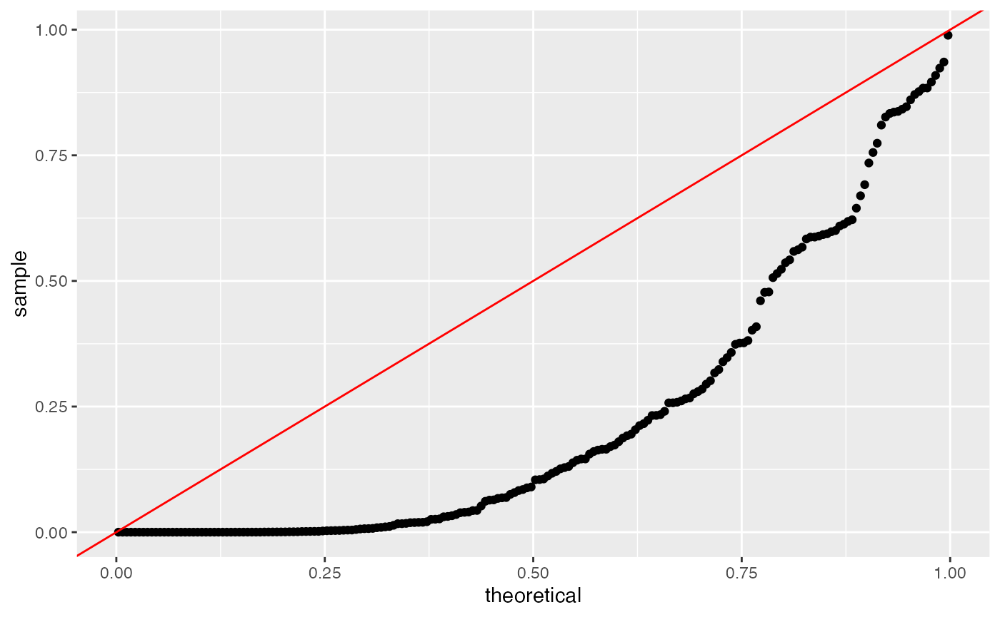
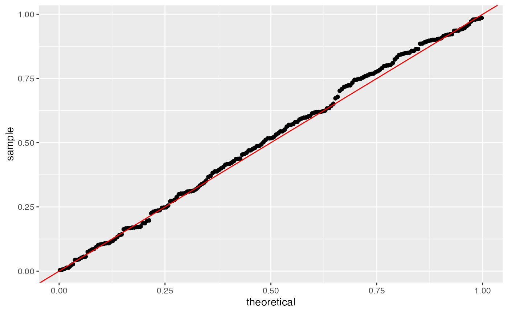
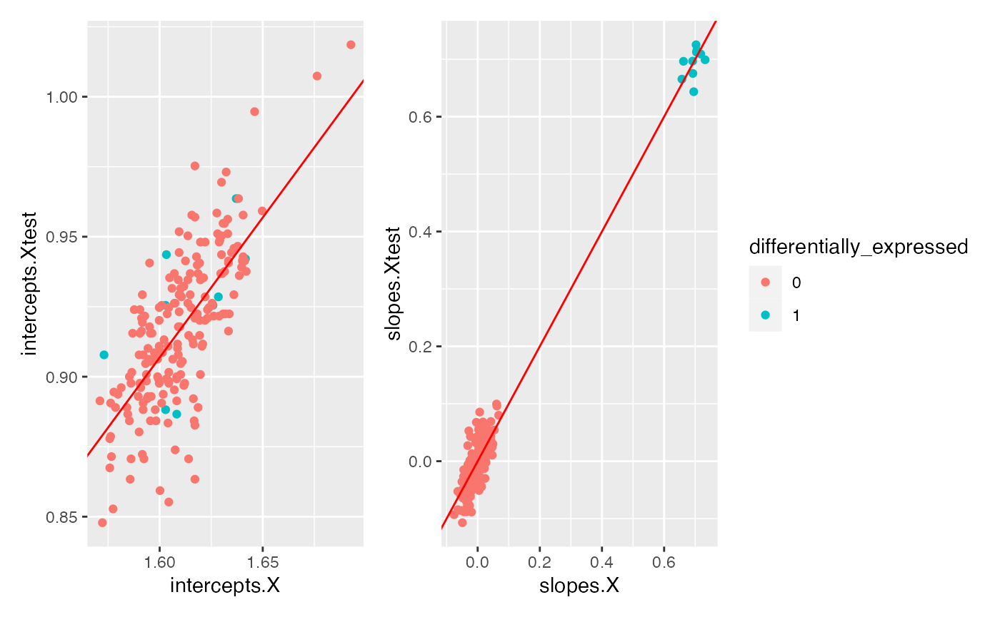
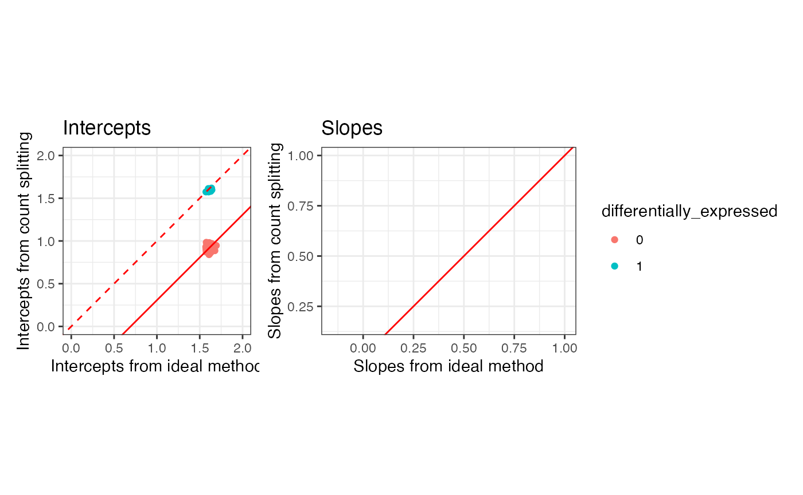

vignettes/vignettes/countsplit_tutorial.Rmd
countsplit_tutorial.RmdIn this tutorial, we demonstrate how to use the countsplit package to perform inference after latent variable selection for scRNA-seq data. In this tutorial, we work with simple simulated data and use only the countsplit package. In the other tutorials on this site, we show how the countsplit package can be integrated into pipelines with other scRNA-seq packages such as scran, monocle3 and seurat . We start by loading the packages we will be working with. Make sure that remotes is installed by running install.packages("remotes"), then type
remotes::install_github("anna-neufeld/countsplit")To get comfortable with the countsplit package, we start by working with simple simulated datasets. For these analyses, we first cluster the cells using k-means clustering with k=2, and then we test for differential expression using Poisson generalized linear models (GLMs). These simple choices keep us from needing external scRNA-seq packages.
First suppose that we have \(n=1000\) cells and \(p=200\) genes. Suppose that every count \(\textbf{X}_{ij}\) is drawn from a \(\text{Poisson}(5)\) distribution. We first generate this data.
Suppose we are interested in studying differential expression across two clusters, obtained with k-means clustering. First we can see that the naive method does not control the Type 1 error rate. Here is an example of what happens when we cluster the data and then test for differential expression using the naive method:
clusters.full <- kmeans(log(X+1), centers=2)$cluster
results.naive <- t(apply(X, 2, function(u) summary(glm(u~clusters.full, family="poisson"))$coefficients[2,]))
head(results.naive)
## Estimate Std. Error z value Pr(>|z|)
## [1,] 0.03958456 0.02820810 1.403305 1.605260e-01
## [2,] -0.10237171 0.02857552 -3.582497 3.403252e-04
## [3,] 0.11308989 0.02849956 3.968127 7.243959e-05
## [4,] 0.10833419 0.02828266 3.830410 1.279301e-04
## [5,] -0.08088836 0.02823097 -2.865235 4.166997e-03
## [6,] 0.04539730 0.02797837 1.622586 1.046780e-01The first line runs k-means with \(k=2\) on the logged data (with a pseudocount of 1) and saves the cluster assignments for each cell in the dataset asclusters.full. For every column \(X_j\) in \(X\), the second line fits a Poisson GLM of \(X_j\) on clusters.full and saves the summary of the slope coefficient in results.naive. As shown in the output, we have saved a slope coefficient estimate, a standard error, a z-value, and a p-value for every gene in the dataset.
Even in these first 6 rows of results, we can see that the naive method assigns small p-values to many genes, despite the fact that no genes are truly differentially expressed in this data. We can make a uniform QQ-plot of the p-values for the naive method to see that they are not uniformly distributed and thus do not control the Type 1 error. The p-values are stored in the 4th column of the results.naive matrix.
library(ggplot2)
ggplot(data=NULL, aes(sample=results.naive[,4]))+geom_qq(distribution="qunif")+geom_abline(col="red")
We now address the issue using count splitting. The key steps are (1) running the countsplit function to get Xtrain and Xtest and then (2) running the analysis step with Xtest as the response and clusters obtained from Xtrain as the latent variable. The countsplit function returns a list, which we call split here, which contains the training set and the test set.
set.seed(2)
split <- countsplit(X, epsilon=0.5)
names(split)
## [1] "train" "test"
Xtrain <- split$train
Xtest <- split$testWe run the same analysis steps as above, but we run the clustering on Xtrain and we use Xtest as the response in our regression.
clusters.train <- kmeans(log(Xtrain+1), centers=2)$cluster
results.countsplit <- t(apply(Xtest, 2, function(u) summary(glm(u~clusters.train, family="poisson"))$coefficients[2,]))
head(results.countsplit)
## Estimate Std. Error z value Pr(>|z|)
## [1,] 0.028171056 0.03988386 0.7063272 0.47998469
## [2,] -0.014424364 0.04075410 -0.3539365 0.72338648
## [3,] 0.007947168 0.04093763 0.1941287 0.84607511
## [4,] 0.024273036 0.04004166 0.6061945 0.54438561
## [5,] -0.067879740 0.04045377 -1.6779582 0.09335526
## [6,] -0.052881527 0.04004365 -1.3205971 0.18663572We can already see from the summary output that the p-values for the first 6 genes are much larger. When we make the same uniform QQ-plot as before, we see that the p-values obtained from count splitting are uniformly distributed, as they should be under this global null where no genes are differentially expressed because all cells have expression counts drawn from the same distribution.
ggplot(data=NULL, aes(sample=results.countsplit[,4]))+geom_qq(distribution="qunif")+geom_abline(col="red")
In summary, count splitting controls the Type 1 error when there is no true signal in the data.
We now demonstrate the performance of count splitting on a simple simulated dataset that contains two true clusters. We first randomly assign the cells to one of two true clusters. We then generate data such that \(X_{ij} \sim \mathrm{Poisson}(\Lambda_{ij})\). Genes 1-10 are differentially expressed– for \(j=1,\ldots,10\), \(\Lambda_{ij} = 5\) for cells in cluster \(0\) and \(\Lambda_{ij}=10\) for cells in cluster \(1\). Genes 11-200 are not differentially expressed (\(\Lambda_{ij}=5\) for all cells).
set.seed(1)
n <- 1000
p <- 200
clusters.true <- rbinom(n, size=1, prob=0.5)
Lambda <- matrix(5, nrow=n, ncol=p)
Lambda[clusters.true==1, 1:10] <- 10
X <-apply(Lambda,1:2,rpois,n=1)We now count split the data and save Xtrain and Xtest for later use.
set.seed(111)
split <- countsplit(X, epsilon=0.5)
Xtrain <- split$train
Xtest <- split$testFirst, let’s look at the effect of count splitting on our ability to estimate the true clusters. If we use all of our data X to estimate the clusters, we make only 5 errors.
set.seed(222)
clusters.full <- kmeans(log(X+1), centers=2)$cluster
table(clusters.true, clusters.full)
## clusters.full
## clusters.true 1 2
## 0 515 5
## 1 0 480If instead we use only Xtrain to estimate the clusters, we see that we make a few additional errors, but that in general we still come very close to estimating the true clusters.
clusters.train <- kmeans(log(Xtrain+1), centers=2)$cluster
table(clusters.true, clusters.train)
## clusters.train
## clusters.true 1 2
## 0 498 22
## 1 8 472We now compare what happens when we regress \(X_j\) on the true clusters to what happens if we regress \(X_j^{\mathrm{test}}\) on the true clusters. We compare both the slope and intercepts.
intercepts.X <- t(apply(X, 2, function(u) summary(glm(u~as.factor(clusters.true), family="poisson"))$coefficients[1,1]))
slopes.X <- t(apply(X, 2, function(u) summary(glm(u~as.factor(clusters.true), family="poisson"))$coefficients[2,1]))
intercepts.Xtest <- t(apply(Xtest, 2, function(u) summary(glm(u~clusters.true, family="poisson"))$coefficients[1,1]))
slopes.Xtest <- t(apply(Xtest, 2, function(u) summary(glm(u~clusters.true, family="poisson"))$coefficients[2,1]))The plot below shows that the intercepts tend to fall on the line \(\mathrm{intercept from } X^\mathrm{test} = \log(0.5) + \mathrm{intercept from X}\). The slopes tend to fall on the line \(\mathrm{slope from } X^\mathrm{test} = \mathrm{slope from X}\).
library(ggplot2)
library(patchwork)
differentially_expressed = as.factor(c(rep(1,10), rep(0,190)))
p1 <- ggplot(data=NULL, aes(x=intercepts.X, y=intercepts.Xtest, col=differentially_expressed ))+geom_point()+geom_abline(intercept= log(0.5), slope=1, col="red")
p2 <- ggplot(data=NULL, aes(x=slopes.X, y=slopes.Xtest, col=differentially_expressed ))+geom_point()+geom_abline(intercept=0, slope=1, col="red")
p1 + p2 + plot_layout(guides="collect")
Finally, we compare the overall slope and intercept estimates that we get from count splitting to what we would get in the ideal setting where we got to regress \(X_j\) on the true clusters.
intercepts.countsplit <- t(apply(Xtest, 2, function(u) summary(glm(u~as.factor(clusters.train), family="poisson"))$coefficients[1,1]))
slopes.countsplit <- t(apply(Xtest, 2, function(u) summary(glm(u~as.factor(clusters.train), family="poisson"))$coefficients[2,1]))
p1 <- ggplot(data=NULL, aes(x=intercepts.X, y=intercepts.countsplit, col=differentially_expressed ))+geom_point()+geom_abline(intercept= log(0.5), slope=1, col="red")
p2 <- ggplot(data=NULL, aes(x=slopes.X, y=slopes.countsplit, col=differentially_expressed ))+geom_point()+geom_abline(intercept=0, slope=1, col="red")
p1 + p2 + plot_layout(guides="collect")
Overall, we see general agreement between the parameters estimated via countsplitting and those estimated via the ideal method.